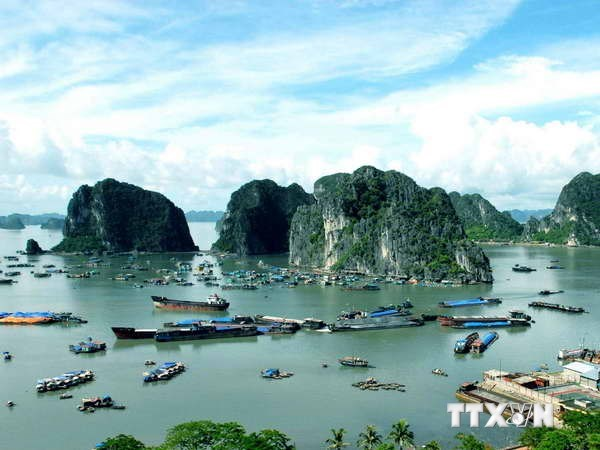

Giữ gìn Di Sản Vịnh Hạ Long cho muôn đời sau
Bảo tồn và phát huy tốt giá trị đặc biệt Vịnh Hạ Long
Tại lễ kỷ niệm 20 năm vịnh Hạ Long được UNESCO công nhận là Di sản thiên nhiên thế giới (lần thứ 2) và công bố Nghị quyết của Ủy ban Thường vụ Quốc hội về việc nhập huyện Hoành Bồ vào TP. Hạ Long, sắp xếp các đơn vị hành chính cấp xã thuộc tỉnh Quảng Ninh tổ chức tối ngày 12/1/2020, Chủ tịch UBND tỉnh Quảng Ninh Nguyễn Văn Thắng cho biết: tỉnh Quảng Ninh đã thực hiện nhiều giải pháp để bảo tồn, gìn giữ, tôn tạo và phát huy di sản Vịnh Hạ Long; thực hiện đầy đủ, đúng với Công ước quốc tế về bảo vệ Di sản văn hóa và thiên nhiên thế giới. Hai mươi năm qua, Quảng Ninh đã đầu tư nguồn lực thỏa đáng để nghiên cứu hàng chục đề tài khoa học cấp trung ương, cấp tỉnh, cấp cơ sở về các giá trị địa chất, địa mạo, đa dạng sinh học động vật, thực vật; khai quật khảo cổ để làm rõ nguồn gốc lịch sử sinh sống của con người trong các hang động trên Vịnh Hạ Long; đầu tư bảo tồn các giá trị văn hóa của cư dân sinh sống trên Vịnh Hạ Long và phát huy thành sản phẩm du lịch đặc sắc trên Vịnh. Quảng Ninh cũng đã di chuyển người dân các làng chài trên Vịnh lên bờ sinh sống ổn định, ban hành quyết định cấm đánh bắt hải sản bằng hình thức hủy diệt, để bảo vệ gìn giữ tốt nhất môi trường cho đa dạng sinh học trên Vịnh Hạ Long. Đồng thời, cũng hoàn thiện hệ thống hạ tầng bến cảng khách quốc gia, quốc tế, hạ tầng giao thông, hạ tầng kỹ thuật để đảm bảo phục vụ tốt hơn cho du khách trong và ngoài nước. Từ năm 2000 đến nay, vịnh Hạ Long đã đón trên 46,8 triệu lượt khách thăm quan, trong đó khách quốc tế là 26,7 triệu lượt, góp phần quan trọng vào phát triển du lịch và kinh tế của tỉnh Quảng Ninh
Phó Chủ tịch Quốc hội Uông Chu Lưu phát biểu tại buổi Lễ cũng ghi nhận, sau 20 năm tính từ khi Vịnh Hạ Long được Tổ chức UNESCO vinh danh là Di sản thế giới lần thứ hai về giá trị địa chất - địa mạo vào năm 2000, Vịnh Hạ Long đã trở thành thương hiệu của du lịch Quảng Ninh, là niềm tự hào của Nhân dân các dân tộc tỉnh Quảng Ninh nói riêng, của cả nước nói chung và là điểm đến được lựa chọn hàng đầu của du khách trong nước và quốc tế. Điều đó khẳng định, minh chứng cho sự nỗ lực, cố gắng của Đảng bộ, chính quyền và Nhân dân các dân tộc tỉnh Quảng Ninh trong việc chăm lo, thực hiện tốt công tác bảo tồn, gìn giữ và biết khai thác, phát huy tốt giá trị đặc biệt của Vịnh Hạ Long. “Việc Ủy ban Thường vụ Quốc hội ra Nghị quyết sáp nhập huyện Hoành Bồ vào TP. Hạ Long, đây sẽ là điều kiện thuận lợi để tỉnh Quảng Ninh tiếp tục phát huy tiềm năng, lợi thế để phát triển. TP. Hạ Long sẽ không còn bị giới hạn về địa giới hành chính. Điều đó sẽ giúp cho Thành phố và tỉnh Quảng Ninh làm tốt hơn nữa công tác bảo tồn và phát huy giá trị di sản - kỳ quan thiên nhiên thế giới Vịnh Hạ Long, bảo vệ môi trường, phát triển kinh tế - xã hội, đưa TP. Hạ Long xứng tầm là thành phố du lịch biển văn minh, thân thiện, đô thị xanh, phát triển bền vững thích ứng với biến đổi khí hậu với hệ thống kết cấu hạ tầng kỹ thuật - xã hội đồng bộ, hiện đại”, Phó Chủ tịch Quốc hội- Uông Chu Lưu nhấn mạnh.
Quyết định lịch sử và đột phá
Bí thư tỉnh ủy, Chủ tịch HĐND Nguyễn Xuân Ký khẳng định, việc sáp nhập huyện Hoành Bồ vào TP. Hạ Long theo Nghị quyết của Ủy ban Thường vụ Quốc hội là sự kiện lịch sử, có ý nghĩa chiến lược lâu dài đối với sự phát triển của TP. Hạ long và của tỉnh Quảng Ninh. Đây là sự kết tinh khát vọng đổi mới, sự trăn trở của bao thế hệ lãnh đạo tỉnh; là kết quả của cả một quá trình diễn tiến khách quan, lâu dài trong lịch sử phát triển của địa phương, là sự mạnh dạn vận dụng, dám nghĩ, dám làm, dám chịu trách nhiệm, cụ thể hóa sáng tạo các nghị quyết của Bộ Chính trị, Quốc hội, Chính phủ vào điều kiện thực tiễn địa phương.“Từ nay Quảng Ninh có một TP. Hạ Long mới trực thuộc tỉnh, không những có quy mô diện tích tự nhiên và số đơn vị hành chính trực thuộc lớn nhất cả nước, mà còn sở hữu những nguồn tài nguyên thiên nhiên “có một, không hai”, tỷ lệ mặt nước, cây xanh và giá trị của sự khác biệt gắn với thương hiệu nổi tiếng Vịnh Hạ Long, đa dạng sinh học, bản sắc văn hóa đặc trưng đặc sắc; đã mang trong mình một tầm vóc mới, mở ra vận hội, thời cơ mới để thu hút tối đa mọi nguồn lực, phát triển đột phá, nhanh, bền vững, nâng tầm vị thế trong giai đoạn mới”, Ông Nguyễn Xuân Ký nhấn mạnh. Theo Chủ tịch UBND tỉnh Quảng Ninh Nguyễn Văn Thắng, việc mở rộng địa giới TP Hạ Long, chính là tỉnh Quảng Ninh đã tìm thấy “chìa khóa” cho phương pháp quản lý có tính tổng thể, nhằm tăng cường khả năng liên kết vùng, phù hợp với yêu cầu tăng trưởng xanh, thích ứng với biến đổi khí hậu, bảo vệ được môi trường và các giá trị ngoại hạng của Vịnh Hạ Long một cách bài bản, tổng thể. Vì thế, việc bảo tồn và phát huy giá trị Vịnh Hạ Long sẽ được tính toán hiệu quả hơn khi đặt trong sự phát triển với các ngành, lĩnh vực liên quan. Chủ tịch UBND tỉnh Quảng Ninh Nguyễn Văn Thắng cũng cho biết, thời gian tới, tỉnh Quảng Ninh sẽ tập trung vào việc đẩy mạnh hợp tác quốc tế, nhằm tranh thủ sự giúp đỡ, ủng hộ của toàn thể cộng đồng và các tổ chức để giữ gìn, phát huy giá trị di sản Vịnh Hạ Long. “Tỉnh tiếp tục rà soát, bổ sung, triển khai các cơ chế, biện pháp mang tính đặc thù để quản lý, kiểm soát chặt chẽ các hoạt động đa ngành trên Vịnh Hạ Long, phù hợp với điều kiện thực tế;cân nhắc kỹ càng trong việc cân bằng, hài hòa giữa bảo tồn và phát triển nhằm bảo vệ tính toàn vẹn, các giá trị nổi bật toàn cầu của Di sản Vịnh Hạ Long. Đặc biệt, những giá trị lợi thế của Di sản - tài nguyên biển, tài nguyên rừng của TP. Hạ Long sau sáp nhập”, Chủ tịch Nguyễn Văn Thắng khẳng định.